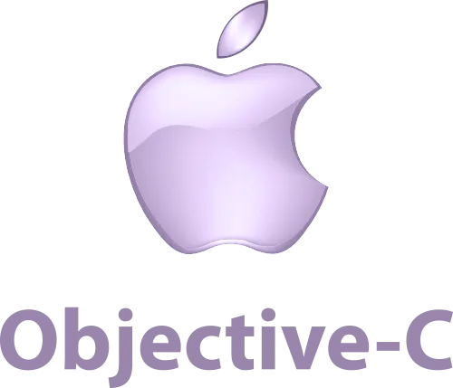

Lenguaje Objective-C
Descripción.
Objective-C
es un lenguaje de programación orientado a objetos que se ha convertido en un pilar fundamental en el ecosistema de desarrollo de Apple. Este lenguaje se desarrolló en los años 80 como una extensión del lenguaje de programación
C
, con el objetivo de agregar capacidades de programación orientada a objetos a C. A lo largo de los años,
Objective-C
ha evolucionado y ha sido ampliamente adoptado en el desarrollo de aplicaciones para dispositivos Apple, incluyendo macOS, iOS, watchOS y tvOS.
Una de las características más notables de
Objective-C
es su enfoque en la comunicación entre objetos mediante el envío de mensajes. En lugar de llamar a métodos directamente, los programadores de
Objective-C
envían mensajes a objetos para solicitar acciones o respuestas. Esta metodología es fundamental en la programación orientada a objetos y es conocida por su flexibilidad y capacidad de extensión.
Características.
Orientación a objetos:
Objective-C
es un lenguaje de programación orientado a objetos que permite la creación de clases y objetos, lo que facilita la organización y la modularización del código.
Herencia: Los programadores pueden utilizar la herencia para crear nuevas clases basadas en clases existentes, lo que fomenta la reutilización de código y la creación de jerarquías de clases.
Mensajes: La comunicación entre objetos se realiza mediante el envío de mensajes en
Objective-C
. Esto es fundamental en la programación orientada a objetos y permite una interacción flexible entre objetos.
Sobrecarga de métodos:
Objective-C
permite la sobrecarga de métodos, lo que significa que es posible definir múltiples versiones de un método con diferentes parámetros.
Gestión de memoria: Tradicionalmente,
Objective-C
requería que los programadores gestionaran manualmente la memoria, pero con la introducción de ARC (Automatic Reference Counting) en versiones más recientes, esta tarea se ha vuelto más automática
Categorías: Los programadores pueden agregar funcionalidad adicional a las clases existentes mediante categorías, lo que permite extender las clases sin modificar su código fuente original.
Interoperabilidad:
Objective-C
se integra bien con
C
y
C++
, lo que facilita la incorporación de código existente y el acceso a bibliotecas escritas en estos lenguajes.
Usos.
Desarrollo de aplicaciones para dispositivos Apple:
Objective-C
es el lenguaje principal utilizado para desarrollar aplicaciones nativas en el ecosistema de Apple, incluyendo iOS (para iPhone y iPad), macOS (para Mac), watchOS (para Apple Watch) y tvOS (para Apple TV).
Aplicaciones de escritorio: Se utiliza para crear aplicaciones de software de escritorio para dispositivos Apple, lo que incluye herramientas de productividad, aplicaciones de entretenimiento y más.
Desarrollo de software para Mac:
Objective-C
es esencial en la creación de aplicaciones de software para la plataforma macOS de Apple.
Desarrollo de aplicaciones móviles: Es la base para el desarrollo de aplicaciones móviles nativas de iOS, lo que incluye juegos, aplicaciones de productividad y aplicaciones de consumo.
Programación de controladores de dispositivos:
Objective-C
se ha utilizado en el desarrollo de controladores y software de bajo nivel para hardware específico de Apple.
Desarrollo de extensiones y complementos:
Objective-C
se utiliza en la creación de extensiones y complementos para aplicaciones de terceros en el ecosistema de Apple, como extensiones de Safari y complementos de Xcode.
Desarrollo de software de servidor: Aunque menos común que en otros ámbitos,
Objective-C
también se ha aplicado en el desarrollo de software de servidor, especialmente en aplicaciones web basadas en tecnologías de Apple.
